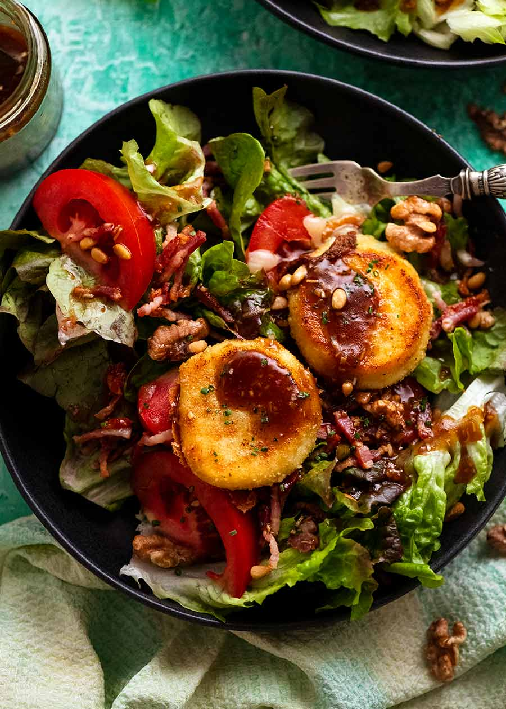

French Goat Cheese Salad
Warm Goat’s Cheese Salad is a classic starter found in bistros all across France. Called Salade de Chêvre Chaud, it’s a fresh leaf salad with nuts and bacon, and crowned with pan-fried goat’s cheese medallions that are golden outside and oozing inside.
Some dishes are showstoppers, while others are ordinary, unfussy and exactly what you want on a slow evening when nothing need be achieved or sought after. This is a simple salad, with the smallest exalting touch: rounds of goat cheese coated in beaten egg and the sheerest veil of bread crumbs, then gently pressed in a hot pan until dark gold. They come served over a careless toss of greens — you can add fresh herbs like dill or parsley for featheriness and a bright lift — in a dressing that requires no more than oil, vinegar, mustard and a single shallot. Eat immediately, when the greens are fresh and cool, and the cheese is still warm, faintly crackly on the outside and oozy within.
Ingredients
Yield: 4 to 6 servings
For the Goat Cheese
- 1cup fine plain bread crumbs
- 1/2 teaspoon fine sea salt
- 1/4 teaspoon black pepper
- 1 large egg
- 1(8-ounce) log fresh goat cheese, chilled
- Extra-virgin olive oil, for pan-frying
For the Salad
- 2 tablespoons red wine vinegar
- 2 teaspoons Dijon mustard
- 1 small shallot, minced
- Salt and black pepper
- 1/3 cup extra-virgin olive oil
- 10 to 12 ounces crisp salad greens
Preparation
- Prepare the goat cheese: In a shallow dish, mix the bread crumbs, salt and pepper. Crack the egg into a separate bowl and beat with a fork. Using unflavored dental floss or a sharp knife, cut the goat cheese into ½-inch-thick rounds.
- Dip each round in the beaten egg, then dredge in the crumbs until completely covered, and transfer to a plate. Refrigerate until very firm, at least 5 minutes.
- Meanwhile, make the salad: In a large bowl, whisk the vinegar, mustard and shallot with a pinch each of salt and pepper. While whisking, add the oil in a slow, thin stream and mix until emulsified. Add the greens and gently toss to coat. Season with more salt and pepper as needed. Divide among serving plates.
- Fry the goat cheese: Heat a thin layer of oil in a large nonstick or well-seasoned cast-iron skillet over medium. Add the breaded goat cheese rounds and cook, turning once, until dark gold, 1 to 2 minutes per side. Transfer to paper towels to drain, then set over the salad. Serve immediately.
- Add a pinch of minced fresh thyme leaves to the crumb mixture to give the breading a warm, piney contour.